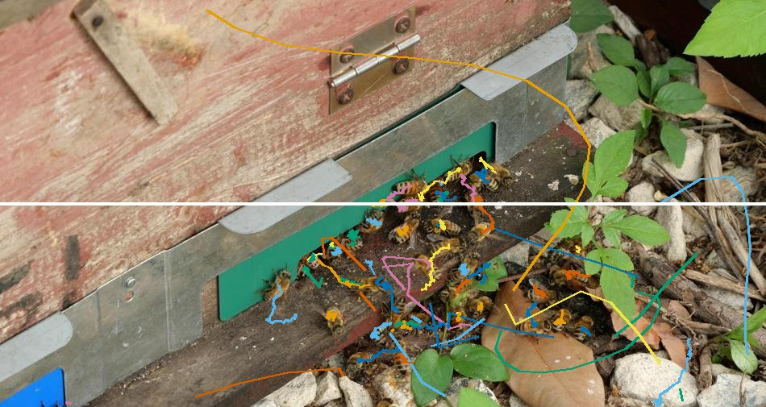

| Member | Student ID | Main responsibility |
|---|---|---|
| {{NAME1}} | {{ID1}} | Data and evaluation pipeline |
| {{NAME2}} | {{ID2}} | Detection model, Experiment 2 |
| {{NAME3}} | {{ID3}} | Tracking and improvement, Experiment 1 |
| {{NAME4}} | {{ID4}} | Counting, visualization, demo, report |
Entrance traffic, the number of bees leaving and returning to a hive, is a direct indicator of colony activity, but counting it by eye does not scale. We present BeeTrack, a video system that detects every honeybee at a hive entrance, assigns each bee a persistent identity, draws its trajectory and counts in/out crossings of a virtual line. A COCO-pretrained YOLO11-s detector is fine-tuned on the BEE24 dataset, and its detections are associated over time by a tracker built on ByteTrack. Bees are small, nearly identical and fast; we show with an oracle experiment that even perfect detections leave the default ByteTrack at HOTA 71.3 on our validation set, so association is a bottleneck in its own right. Our improvement, motion-adaptive association, replaces plain IoU with a buffered IoU whose search region grows with a track's speed and with the number of frames it has been lost, damps the velocity of lost tracks, raises the Kalman velocity process noise and keeps lost tracks longer. All parameters are tuned on validation data only; the five official BEE24 test videos (10,762 frames, 168,230 boxes) are used once. On the test set, motion-adaptive association changes HOTA from TODO to TODO, IDF1 from TODO to TODO and ID switches from TODO to TODO, with identical detections; the line-crossing count error falls from TODO to TODO of 753 ground-truth crossings. A second controlled experiment compares detector input sizes of 640 and 1280 pixels, and robustness is analysed under synthetic darkening, over-exposure, motion blur and sensor noise, under frame dropping and across crowd densities. The full pipeline runs at TODO FPS on an RTX 4060 Laptop GPU.
Keywords: multi-object tracking, honeybee monitoring, YOLO11, ByteTrack, buffered IoU, Kalman filter, HOTA, line-crossing counting
Beekeepers and pollination researchers watch hive entrances because foraging traffic responds quickly to weather, food availability, pesticides and disease. A video camera at the entrance is cheap, but turning the video into numbers is not: a few minutes of footage contains thousands of short flights, and manual counting is slow and error-prone. An automatic system that tracks each bee and counts how many enter and leave would make continuous, objective monitoring possible.
Tracking bees is harder than tracking pedestrians, the setting most multi-object trackers were designed for. A bee box is only about 46 × 50 pixels in a 950 × 600 frame; dozens of bees look practically identical, so appearance cues help little; and bees accelerate, turn and land within a few frames. A tracker that predicts each object with a constant-velocity Kalman filter and matches by box overlap often finds that the predicted box of a fast bee does not overlap its next detection at all. The track is then lost, re-started under a new identity or, worse, swapped with a neighbour. The entrance itself is the most crowded region, exactly where counting takes place.
The system addresses Project 1 of the course (real-time multi-object detection and tracking). Its input is a hive-entrance video (a video file or a folder of frames). Its outputs are, for every frame, the bounding box and track ID of every bee; a trajectory and heading for each ID; cumulative in/out counts at a horizontal line; the measured processing speed; an annotated video; and a CSV file of all tracks. The objectives are:
Object detection. Single-stage detectors of the YOLO family [1] predict boxes densely in one forward pass and are the usual choice for real-time tracking-by-detection. We use YOLO11 [2], the current Ultralytics release, in its small variant. Transformer detectors such as RT-DETR [3] reach similar speed but need more memory and training time than our 8 GB laptop GPU comfortably allows.
Tracking by detection. SORT [4] links detections with a constant-velocity Kalman filter [5] and IoU-based Hungarian matching [6]. DeepSORT [7] adds a re-identification embedding, which is of little use when all targets look alike. ByteTrack [8] keeps low-confidence detections and matches them in a second stage, recovering partially occluded objects; it is the default tracker in Ultralytics and our baseline. BoT-SORT [9] adds camera-motion compensation and appearance; the BEE24 camera is static, so neither applies directly. OC-SORT [10] re-estimates the Kalman state from observations after a track is lost, addressing the drift of non-linear motion.
Irregular motion. DanceTrack [11] showed that trackers tuned on MOT17 [12] and MOT20 [13] degrade when targets have uniform appearance and diverse motion, which is exactly the bee setting. C-BIoU [14] enlarges both the track and detection boxes before computing IoU so that fast objects with non-overlapping boxes can still be matched, and cascades two buffer sizes. Our method adopts the buffered IoU idea and makes the buffer depend on each track's state (speed and time lost) instead of using fixed cascades.
Insect tracking. Bozek et al. [15] tracked densely packed bees inside a hive with a segmentation network and temporal linking. The BEE24 dataset [16] was released with TOPICTrack, which runs motion and appearance association in parallel; the authors report HOTA 46.6, IDF1 59.7 and MOTA 66.7 on the BEE24 test set. These figures come from a different detector and training protocol, so we cite them only as context, not as a controlled comparison.
Evaluation. CLEAR MOT metrics [17] (MOTA, ID switches) are dominated by detection quality, IDF1 [18] measures identity consistency, and HOTA [19] balances detection (DetA) and association (AssA) accuracy. We compute all of them with the reference TrackEval implementation [20]. Synthetic corruptions follow the spirit of the common-corruption benchmarks of Hendrycks and Dietterich [21].
BEE24 [16] contains 36 hive-entrance videos at 25 fps (about 950 × 600 px; one sequence is 810 × 430) with 446,908 boxes, 4,559 bee identities and on average 19.0 bees per frame (maximum 52). Every box carries a track ID in MOTChallenge format (frame, id, x, y, w, h), which supports identity-based tracking metrics as required by Section 7B of the guidelines. The data are a public download of 2.3 GB without registration. The dataset page states no licence, so we use the data only for this course and cite the paper. The videos show insects only; no people are recorded.
The official split has 31 training and 5 test videos. The test set (BEE24-12, -13, -16, -34, -36; 10,762 frames, 168,230 boxes) is never used for training, model selection or parameter tuning; it is evaluated once per final configuration. From the training videos we build a validation set for detector early stopping and all tracker tuning (Table 1).
The proposal planned to hold out whole training sequences as validation. During implementation we found that the short training sequences (75 to 258 frames) contain far fewer bees per frame than the two long test videos, which are 5,000 frames each and include the densest segments. A validation set without long dense segments would tune the tracker for the wrong regime. We therefore hold out four whole short sequences (BEE24-10, -15, -24, -28) and the last 1,000 frames of the two long training videos BEE24-33 and -35. A 50-frame gap that belongs to neither split separates these tails from the training frames, so neighbouring near-identical frames cannot leak across the boundary. prep.py asserts that no frame belongs to two splits.
Table 1. Data split used in all experiments.
| Split | Sequences | Frames | Detector images | Boxes | Use |
|---|---|---|---|---|---|
| Train | 27 official training videos (heads of -33, -35) | 10,060 | 3,740 | 221,393 | detector fine-tuning |
| Validation | BEE24-10, -15, -24, -28; last 1,000 frames of -33, -35 | 2,640 | 840 | 54,724 | early stopping, all tuning, ablation |
| Test | BEE24-12, -13, -16, -34, -36 (official) | 10,762 | 1,762 | 168,230 | final evaluation only |
0 cx cy w h, normalised). Frames without bees get an empty label file and act as negatives.gt.txt (confidence, class and visibility set to 1) and seqinfo.ini. Validation tails are renumbered to start at frame 1.Table 2. Test and validation sequences (computed from the ground truth). Crossings use the counting protocol of Section 6.5.
| Sequence | Split | Size (px) | Frames | Boxes | Bees / frame (mean / max) | IDs | GT in / out |
|---|---|---|---|---|---|---|---|
| BEE24-12 | test | 810 × 430 | 250 | 1,973 | 7.9 / 9 | 19 | 6 / 5 |
| BEE24-13 | test | 950 × 600 | 258 | 6,462 | 25.0 / 28 | 54 | 19 / 17 |
| BEE24-16 | test | 950 × 600 | 254 | 3,770 | 14.8 / 23 | 80 | 48 / 57 |
| BEE24-34 | test | 950 × 470 | 5,000 | 103,465 | 20.7 / 31 | 1,143 | 168 / 145 |
| BEE24-36 | test | 950 × 548 | 5,000 | 52,560 | 10.5 / 17 | 163 | 157 / 131 |
| BEE24-10 / -15 / -24 / -28 | val | 950 × 590–600 | 640 | 7,584 | 9.9–13.5 | 193 | 65 / 59 |
| BEE24-33 tail | val | 950 × 505 | 1,000 | 37,311 | 37.3 / 45 | 326 | 61 / 58 |
| BEE24-35 tail | val | 920 × 720 | 1,000 | 9,829 | 9.8 / 14 | 67 | 24 / 31 |

proposal/img/gt_traj.jpg'">BeeTrack is a tracking-by-detection pipeline with five stages (Figure 2). The same modules serve two purposes: an offline evaluation path that caches detections and scores many tracker settings on identical inputs, and an online demo path that runs detection and tracking frame by frame on any video.
prep → train → detect (cache) → track → evaluate / sweep → analytics · Online path: demo (detect + track per frame). Highlighted: our improvement.Figure 2. System block diagram and data flow.
Data flow. prep.py turns the raw annotations into YOLO labels, image lists and TrackEval ground truth. train.py fine-tunes the detector. detect.py runs the detector once on every validation or test frame and stores the boxes (frame, x1, y1, x2, y2, score) in a NumPy cache, optionally after a synthetic image corruption. track.py feeds the cached boxes, frame by frame, to either tracker and writes MOTChallenge result files. evaluate.py computes HOTA, CLEAR and Identity metrics with TrackEval and the line-crossing count error; sweep.py runs whole grids of tracker settings on validation data. analytics.py produces trajectory, heatmap, count and track-length figures, and demo.py runs the online path and writes an annotated video and a CSV.
Why cache detections. Experiment 1 must change only the tracker. Running the detector once and replaying the identical boxes to every tracker setting removes any run-to-run variation in detection (FP16 non-determinism, pre-processing), makes the comparison exactly controlled and lets a sweep of dozens of settings finish in minutes on the CPU.
YOLO11-s is a single-stage, anchor-free detector with a CSP-style backbone, a feature pyramid neck and a decoupled head that predicts class scores and box distributions at three strides (8, 16, 32). A bee of about 46 px occupies roughly six cells at stride 8 for a 640 px input, enough for the finest head but leaving little margin for the smaller bees; doubling the input to 1280 px doubles that resolution at a fourfold cost in computation, which Experiment 2 measures. We keep detections down to a confidence of 0.05, because ByteTrack's second stage deliberately uses low-score boxes.
Each track has a Kalman state x = (cx, cy, a, h, ċx, ċy, ȧ, ḣ) (centre, aspect ratio, height and their velocities) with a constant-velocity transition. Process and measurement noise are proportional to the box height h; the velocity standard deviation is σv = wv·h with wv = 1/160. At every frame:
track_buffer = 30 frames (1.2 s) are removed; until then they are "lost" and can be re-activated.The failure we target is geometric: for a fast bee the predicted box and the next detection do not overlap, IoU is 0 and no threshold can match them. We make four changes inside ByteTrack; Section 9 gives the justification and the ablation that tests each.
(a) Buffered IoU with an adaptive buffer. Before computing IoU, a box (x1, y1, x2, y2) of width w and height h is enlarged by a ratio r on every side:
Detections use the fixed base buffer b. A track i uses a buffer that grows with the number of frames ℓi since its last match and with its speed measured in box heights per frame:
This cost replaces the plain IoU cost in the first (high-score) association and in the unconfirmed-track association; the second, low-score stage keeps plain IoU so that weak detections are only accepted when they genuinely overlap. A stationary, freshly matched bee therefore uses a small buffer, while a bee that is moving fast or has been missing for several frames is searched for in a wider region.
(b) Velocity damping for lost tracks. While a track is lost its velocity is multiplied by δ before each prediction, v ← δ·v, so a hidden bee does not drift away along a stale velocity; the region of equation (2) grows instead.
(c) Larger velocity process noise. The velocity weight wv is raised from 1/160 to qv, letting the filter follow sudden accelerations and turns faster.
(d) Longer lost-track buffer. track_buffer is raised from 30 to 60 frames (2.4 s) so that bees that pause behind others or land briefly can be re-activated with their old ID.
Table 3. Tracker parameters. "Ours" values are the defaults in track.py; final values are selected on validation data (Section 10.3).
| Parameter | ByteTrack (baseline) | Ours | Meaning |
|---|---|---|---|
| track_high / low / new thresh | 0.25 / 0.1 / 0.25 | 0.25 / 0.1 / 0.25 | score thresholds of the two stages, new-track threshold |
| match_thresh, fuse_score | 0.8, on | 0.8, on | max first-stage cost; IoU × score fusion |
| track_buffer | 30 | 60 TODO confirm | frames a lost track is kept |
| buffer b | 0 | 0.3 TODO confirm | base box enlargement |
| grow g | 0 | 0.1 TODO confirm | extra buffer per lost frame (≤ 10 frames) |
| speed k | 0 | 0.5 TODO confirm | extra buffer per box height / frame of speed |
| damp δ | 1 | 0.9 TODO confirm | lost-track velocity decay per frame |
| q_vel wv | 1/160 | 1/80 TODO confirm | Kalman velocity process-noise weight |
From the tracker output we draw per-ID trajectories (box centres over the first 60 s), an occupancy heatmap of box centres over the whole sequence, in/out counts per 20-s bin compared with ground truth, the distribution of track lengths (fragmentation shows up as an excess of short tracks) and the median speed of tracks longer than five frames. In the demo each ID carries a one-second trail whose direction gives its heading.
BEE24 has no count labels, so we define counts from trajectories with one rule applied identically to ground-truth and predicted tracks. A horizontal line is placed at mid-height, y = H/2. For each track, the sign of cy − H/2 is taken over its frames in temporal order, frames exactly on the line are ignored, and every change of sign is one crossing: upward (towards smaller y) is counted as in, downward as out. The count error of a tracker on a set of sequences S is
where I, O are ground-truth in/out counts and Î, Ô the predicted ones. We report E against the total number of ground-truth crossings (753 on the test set). The rule is deliberately simple: an ID switch at the line or a track that is lost and restarted on the other side can drop or duplicate a crossing, so count error is sensitive to exactly the association errors we try to remove. A mid-height line is a protocol choice for comparability across sequences; the demo lets the user place the line at any height.
Table 4. Software, hardware and fixed settings.
| Item | Setting |
|---|---|
| Hardware | NVIDIA RTX 4060 Laptop GPU, 8 GB |
| Software | Python 3.11 (uv environment, uv.lock), PyTorch 2.11.0 + CUDA 12.8, Ultralytics 8.4.208, TrackEval (git 12c8791), OpenCV, NumPy, Matplotlib |
| Pretrained weights | Ultralytics yolo11s.pt (COCO), AGPL-3.0 |
| Training | one class "bee"; budget 50 epochs, early-stopping patience 15 on validation fitness; seed 0, deterministic mode; batch 16 at 640 px, 4 at 1280 px (memory limit); mosaic 1.0 (off for the last 10 epochs), horizontal flip 0.5, no vertical flip; other Ultralytics defaults |
| Inference | FP16, confidence ≥ 0.05, NMS IoU 0.7, at most 300 boxes per frame, input size equal to the training size |
| Tracking | Ultralytics BYTETracker; ours subclasses it and overrides only get_dists, multi_predict and get_kalmanfilter (about 40 lines) |
| Evaluation | TrackEval MotChallenge2DBox, one class, no preprocessing (all GT boxes are valid bees), HOTA averaged over localisation thresholds α = 0.05 … 0.95, CLEAR and Identity at IoU 0.5 |
| Timing | CUDA-synchronised wall clock; detector time includes image decoding and excludes the first 10 frames (warm-up); tracker time measured separately per frame |
The repository is organised as a Python package beetrack with one module per pipeline step, each run as uv run python -m beetrack.<module> from the repository root; every output goes under runs/. Every tracker run writes a timing.json with the full parameter set, and every sweep writes its table to JSON, so each number in this report can be traced to a file.
The baseline is the standard pipeline a practitioner would build first: the fine-tuned YOLO11-s detector at 640 px followed by Ultralytics ByteTrack with its default configuration (Table 3). A COCO model without fine-tuning cannot serve as a baseline because COCO has no bee class.
Detector training. With a 50-epoch budget the 640 px model early-stopped after 22 epochs (0.32 h), the best checkpoint reaching mAP@0.5 = 0.946 and mAP@0.5:0.95 = 0.513 on the validation images. The gap between the two numbers indicates that bees are found reliably but localised loosely, which is expected for small objects with blurred wings. Test-set detection results are in Table 5.
Table 5. Detection results of YOLO11-s at 640 px.
| Split | Precision | Recall | mAP@0.5 | mAP@0.5:0.95 |
|---|---|---|---|---|
| Validation | TODO | TODO | 0.946 | 0.513 |
| Test | TODO | TODO | TODO | TODO |
Oracle analysis. To see how much of the tracking error is caused by association rather than detection, we replace the detector with the ground-truth boxes (score 1) on the validation set. Default ByteTrack then reaches only HOTA 71.3 and IDF1 76.0 with 431 ID switches, even though every bee is detected perfectly in every frame. The remaining errors are purely association failures, mostly on fast bees whose consecutive boxes do not overlap. This result motivates improving the tracker rather than only the detector.
Table 6. Oracle detections (ground-truth boxes) on the validation set.
| Tracker | HOTA | AssA | IDF1 | MOTA | IDSW |
|---|---|---|---|---|---|
| ByteTrack (default) | 71.3 | TODO | 76.0 | TODO | 431 |
| Ours | TODO | TODO | TODO | TODO | TODO |
Observed problem. The oracle experiment shows that association fails even with perfect boxes. With a median box of about 46 px, a bee that moves more than one box width per frame produces boxes with zero overlap; the constant-velocity Kalman prediction helps only if the bee keeps its velocity, which bees often do not. Once IoU is zero, ByteTrack cannot match at any threshold, the track becomes lost and the next detection starts a new ID, which reduces IDF1 and AssA and breaks crossings.
Why these changes. Each change addresses one part of that failure and adds no learned parameters, so it keeps the tracker real-time and explainable:
Deviation from the proposal. The proposal described raising the process noise for tracks that are turning. In the implementation the per-track adaptation is carried by the buffer (speed and lost-time terms), while the process noise uses one higher fixed weight; this kept the Kalman filter unchanged and every component separately switchable. The proposal also mentioned size-normalised centre distance; buffered IoU of enlarged boxes was used instead because it is scale-normalised by construction.
Success criterion (fixed in the proposal): higher HOTA and IDF1 and fewer ID switches than ByteTrack on the same test set with the same detections. Each component is ablated on the validation set by switching it back to ByteTrack's value while keeping the others (Table 10).
Detection: precision, recall, mAP@0.5 and mAP@0.5:0.95. Tracking: HOTA with its detection and association components, IDF1, MOTA, ID switches (IDSW), false positives and false negatives. HOTA at threshold α is the geometric mean of detection and association accuracy and is averaged over α:
Counting: the count error E of equation (4). Speed: detector milliseconds per frame, tracker milliseconds per frame and end-to-end FPS = 1000 / (detector ms + tracker ms).
sweep.py runs grids of tracker settings on the cached validation detections and ranks them by HOTA. Grids: buffer (b ∈ {0.1, 0.2, 0.3, 0.5} × g ∈ {0, 0.1} × k ∈ {0, 0.5, 1}; 24 settings), motion (δ ∈ {0.8, 0.9, 1} × 1/qv ∈ {40, 80, 160} × track_buffer ∈ {30, 60, 90}; 27 settings), thresh (score and match thresholds for both trackers; 36 settings) and ablation (7 settings). The selected values are frozen before the test set is evaluated. Selected configuration: TODO.
The proposal also listed lighting and shadow by scene group; BEE24 provides no scene labels, so lighting is studied with the synthetic dark and bright conditions instead.
Table 7 gives the main test-set result of the complete system, with the 640 px detector and the validation-selected settings of our tracker.
Table 7. Test set (5 official BEE24 test videos), identical 640 px detections.
| Tracker | HOTA ↑ | DetA ↑ | AssA ↑ | IDF1 ↑ | MOTA ↑ | IDSW ↓ | FP ↓ | FN ↓ | Count err ↓ (/753) | Tracker ms ↓ |
|---|---|---|---|---|---|---|---|---|---|---|
| ByteTrack (default) | TODO | TODO | TODO | TODO | TODO | TODO | TODO | TODO | TODO | TODO |
| Ours (motion-adaptive) | TODO | TODO | TODO | TODO | TODO | TODO | TODO | TODO | TODO | TODO |
| TOPICTrack [16] (reference, different detector) | 46.6 | – | – | 59.7 | 66.7 | – | – | – | – | – |
Table 8. Processing speed on the RTX 4060 Laptop GPU (mean over the test set).
| Configuration | Detector ms / frame | Tracker ms / frame | End-to-end FPS | Demo FPS (live) |
|---|---|---|---|---|
| 640 px + ByteTrack | TODO | TODO | TODO | TODO |
| 640 px + ours | TODO | TODO | TODO | TODO |
| 1280 px + ours | TODO | TODO | TODO | TODO |
Table 9. Line-crossing counts per test sequence (in / out), 640 px detections.
| Sequence | Ground truth | ByteTrack | Ours | Error ByteTrack | Error ours |
|---|---|---|---|---|---|
| BEE24-12 | 6 / 5 | TODO | TODO | TODO | TODO |
| BEE24-13 | 19 / 17 | TODO | TODO | TODO | TODO |
| BEE24-16 | 48 / 57 | TODO | TODO | TODO | TODO |
| BEE24-34 | 168 / 145 | TODO | TODO | TODO | TODO |
| BEE24-36 | 157 / 131 | TODO | TODO | TODO | TODO |
| Total | 398 / 355 | TODO | TODO | TODO | TODO |
Interpretation. TODO (expected discussion: which metrics change most; whether gains come from AssA rather than DetA, as the method only changes association; how count error follows IDSW and fragmentation; tracker overhead relative to detector time).


Objective. Measure whether motion-adaptive association improves identity preservation over default ByteTrack, and which component is responsible.
Controlled settings. Identical cached detections (YOLO11-s, 640 px, same weights), identical score thresholds, same sequences and evaluation code. Only the association changes. Test results are in Table 7; the ablation below is on validation data, where tuning is allowed.
Table 10. Ablation on the validation set (640 px detections). Each row switches one component of ours back to ByteTrack's value.
| Setting | Change from ours | HOTA | AssA | IDF1 | MOTA | IDSW | Count err (/298) |
|---|---|---|---|---|---|---|---|
| ByteTrack | all components off | TODO | TODO | TODO | TODO | TODO | TODO |
| Ours | – | TODO | TODO | TODO | TODO | TODO | TODO |
| − buffer | b = g = k = 0 (plain IoU) | TODO | TODO | TODO | TODO | TODO | TODO |
| − adaptive | g = k = 0 (fixed buffer) | TODO | TODO | TODO | TODO | TODO | TODO |
| − damping | δ = 1 | TODO | TODO | TODO | TODO | TODO | TODO |
| − process noise | qv = 1/160 | TODO | TODO | TODO | TODO | TODO | TODO |
| − long buffer | track_buffer = 30 | TODO | TODO | TODO | TODO | TODO | TODO |
Interpretation. TODO
Failure cases. TODO (cases where ours is worse than ByteTrack, e.g. merges of neighbouring bees caused by a large buffer at the crowded entrance).
Objective. Test whether a higher input resolution improves detection of small bees enough to improve tracking, and at what speed cost.
Controlled settings. Same architecture (YOLO11-s), same COCO initialisation, same training images, augmentation, seed, 50-epoch budget and patience; same tracker (ours, validation-selected settings) and same test set. Only the input size changes (640 vs. 1280 px). The batch size must drop from 16 to 4 at 1280 px to fit in 8 GB; this is an unavoidable side effect of the factor under study and is reported.
Table 11. Experiment 2: detector input size.
| Input | Batch | Epochs (stop) | Train h | Val mAP@0.5 | Val mAP@.5:.95 | Test mAP@0.5 | Test mAP@.5:.95 | HOTA | IDF1 | IDSW | Count err | FPS |
|---|---|---|---|---|---|---|---|---|---|---|---|---|
| 640 | 16 | 22 | 0.32 | 0.946 | 0.513 | TODO | TODO | TODO | TODO | TODO | TODO | TODO |
| 1280 | 4 | TODO | TODO | TODO | TODO | TODO | TODO | TODO | TODO | TODO | TODO | TODO |
Interpretation. TODO
Failure cases. TODO
Table 12. Test set under synthetic corruptions (640 px detector, not retrained).
| Condition | ByteTrack | Ours | ||||||
|---|---|---|---|---|---|---|---|---|
| HOTA | IDF1 | IDSW | Count err | HOTA | IDF1 | IDSW | Count err | |
| clean | TODO | TODO | TODO | TODO | TODO | TODO | TODO | TODO |
| dark (× 0.4) | TODO | TODO | TODO | TODO | TODO | TODO | TODO | TODO |
| bright (× 1.6 + 20) | TODO | TODO | TODO | TODO | TODO | TODO | TODO | TODO |
| motion blur (9 px) | TODO | TODO | TODO | TODO | TODO | TODO | TODO | TODO |
| noise (σ = 15) | TODO | TODO | TODO | TODO | TODO | TODO | TODO | TODO |
Table 13. Test set when only every k-th frame is processed (count error against the GT crossings of the subsampled sequence).
| Step k (fps) | ByteTrack | Ours | ||||||
|---|---|---|---|---|---|---|---|---|
| HOTA | IDF1 | IDSW | Count err | HOTA | IDF1 | IDSW | Count err | |
| 1 (25) | TODO | TODO | TODO | TODO | TODO | TODO | TODO | TODO |
| 2 (12.5) | TODO | TODO | TODO | TODO | TODO | TODO | TODO | TODO |
| 3 (8.3) | TODO | TODO | TODO | TODO | TODO | TODO | TODO | TODO |
| 5 (5) | TODO | TODO | TODO | TODO | TODO | TODO | TODO | TODO |
Table 14. Results per test sequence, sorted by density (640 px detections).
| Sequence | Bees / frame | ByteTrack | Ours | ||||
|---|---|---|---|---|---|---|---|
| HOTA | IDF1 | IDSW | HOTA | IDF1 | IDSW | ||
| BEE24-12 | 7.9 | TODO | TODO | TODO | TODO | TODO | TODO |
| BEE24-36 | 10.5 | TODO | TODO | TODO | TODO | TODO | TODO |
| BEE24-16 | 14.8 | TODO | TODO | TODO | TODO | TODO | TODO |
| BEE24-34 | 20.7 | TODO | TODO | TODO | TODO | TODO | TODO |
| BEE24-13 | 25.0 | TODO | TODO | TODO | TODO | TODO | TODO |
Interpretation. TODO
We inspect the frames where the two trackers disagree and where count errors occur, using the annotated demo video and the track-length histograms. Failures are grouped into the categories below; each is illustrated with a cropped frame sequence.
The working application is beetrack.demo. It accepts a video file or a folder of frames, runs the fine-tuned detector and the selected tracker frame by frame, and writes an annotated MP4 video and a CSV file of all tracks (frame, ID, box, score). The overlay shows, for every bee, its box and ID in a colour derived from the ID and a one-second trail indicating its heading; the counting line; and a status line with live in/out counts, the number of bees currently tracked, the tracker name and the processing FPS, measured over detection plus tracking with a 30-frame rolling window. The counting line height and the tracker (ours or ByteTrack) are command-line options, so the same video can be shown with both trackers side by side.
Typical use: uv run python -m beetrack.demo --source data/BEE24/test/BEE24-36/img1 --tracker ours. The environment is pinned by uv.lock, so every team member can reproduce it with uv sync. The demo was also run on input not used anywhere in development: TODO (e.g. an unseen hive video, labelled as qualitative evidence because it has no ground truth).

Future work: learned or interacting-multiple-model motion for take-off and landing; region-based counting at the actual entrance slot; longer-term deployment with a camera of our own; and quantised edge inference.
BeeTrack is a complete, reproducible system that turns hive-entrance video into bee identities, trajectories and in/out counts. An oracle experiment showed that association, not only detection, limits tracking of small fast bees. Motion-adaptive association, which matches enlarged boxes whose size follows each track's speed and time lost and adjusts the motion model of lost tracks, changes test HOTA by TODO, IDF1 by TODO and ID switches by TODO relative to ByteTrack on identical detections, and reduces the counting error from TODO to TODO. Experiment 2 showed TODO for the 1280 px input. The system runs at TODO FPS on a laptop GPU. All tuning used validation data only, and the test set was evaluated once per final configuration.
yolo11s.pt), AGPL-3.0. We fine-tuned it on BEE24; no other pretrained weights were used. The baseline tracker is Ultralytics' ByteTrack implementation; our tracker subclasses it.| Member | Technical responsibilities and completed work | Share |
|---|---|---|
| {{NAME1}} {{ID1}} | Data and evaluation pipeline: dataset download and inspection, train/validation/test split with leakage checks, YOLO labels, TrackEval ground truth and duplicate-ID repair, counting protocol, evaluate.py, frame-drop ground truth. TODO member to confirm | 25% |
| {{NAME2}} {{ID2}} | Detection model and Experiment 2: YOLO11-s fine-tuning at 640 and 1280 px, detection metrics, detection cache and synthetic corruptions (train.py, detect.py), speed measurement. TODO member to confirm | 25% |
| {{NAME3}} {{ID3}} | Tracking, improvement and Experiment 1: ByteTrack baseline, motion-adaptive association (track.py), oracle study, validation sweeps and ablation (sweep.py), failure analysis. TODO member to confirm | 25% |
| {{NAME4}} {{ID4}} | Counting, visualization, demo application and report integration: trajectory and count analytics (analytics.py), demo application and video (demo.py), figures, report and slide integration. TODO member to confirm | 25% |